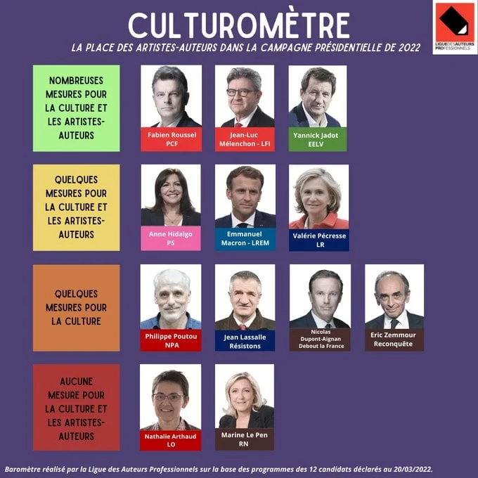
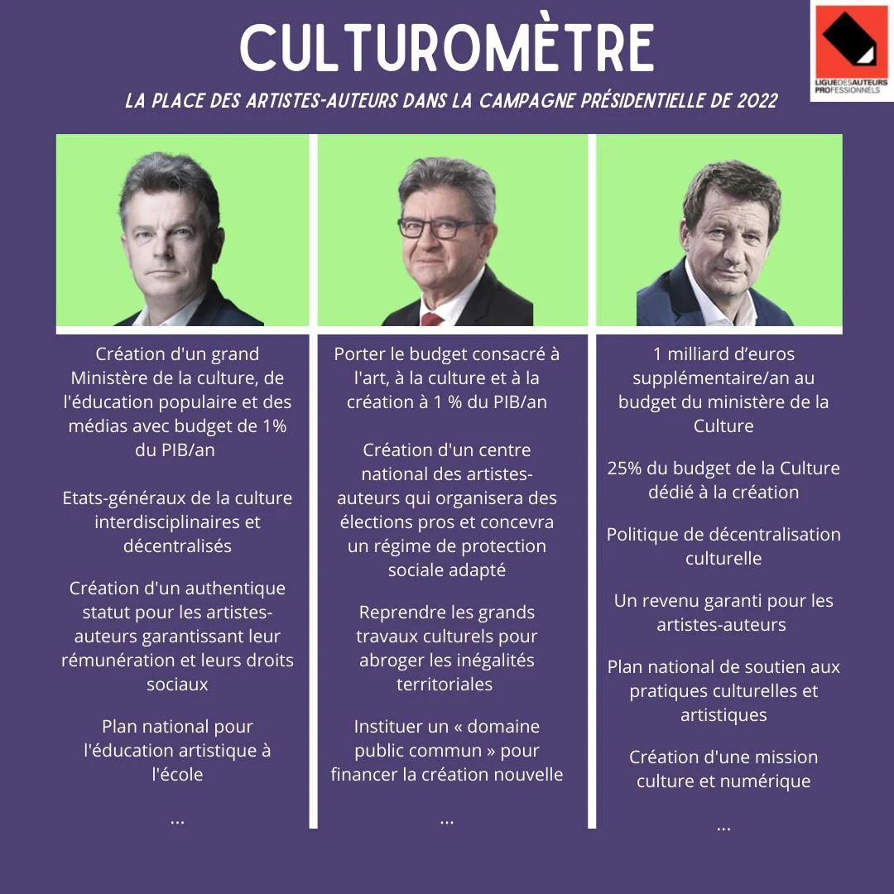

Publication d’archives
Comparer les programmes pour la création
Date indiquée par Facebook · 5 avril 2022
Texte conservé avec la publication
Repères éditoriaux
Le 5 avril, la page présente le « culturomètre » de la Ligue des auteurs professionnels. Ce travail compare les programmes des douze candidats à la présidentielle à partir des documents disponibles au 20 mars. La méthode revendiquée repose sur des critères identiques et sur la place faite aux artistes-auteurs et à la culture. Aucun résultat du baromètre n’est reproduit dans la légende. L’initiative pose néanmoins une exigence utile au débat électoral : les professions concernées peuvent construire leurs propres outils de lecture, demander des engagements précis et rendre les choix culturels visibles dans la confrontation politique.


Sources
Archive rouge · export Facebook · AR-0002-FB-01907
À lire aussi · #Qatar2022 « Je comprends ces mouvements de boycott. Mais c’est trop tard, il fallait se révolter il y a 12…